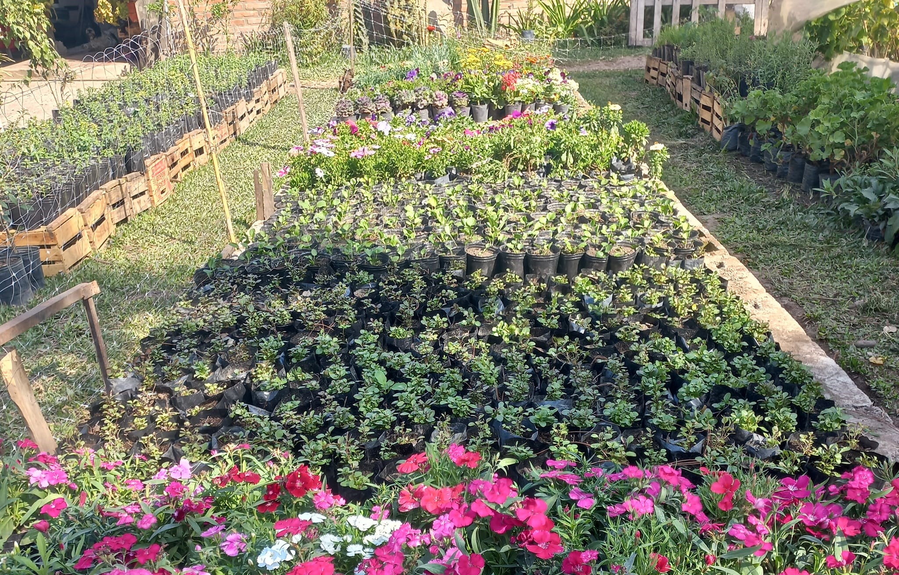

Nuestra Historia
Somos una familia dedicada a este hermoso mundo de las plantas
Alberto Mangiafico, su dueño, nombro al vivero "Turi" en honor a su padre, hace varios años atras. Hoy esta empresa familiar crece cada dia mas. Nacimos y actualmente vivimos en la hermosa ciudad de San Isidro de Lules, provincia de Tucuman "el jardin de la republica Argentina" en donde cuenta con sucursales y con produccion propia. Tambien a lo largo de los años nos convertimos en mayoristas, desde muchos lugares de nuestra provincia vienen a conocer nuestro trabajo. Contamos con una extensa variedad de plantas, alrededor de mas de siete mil pruductos a la venta. Esto es paciencia, estar todos los días… Amor y pasión. Es lo que nos motiva dia a dia a seguir trabajando en nuestro emprendimiento.